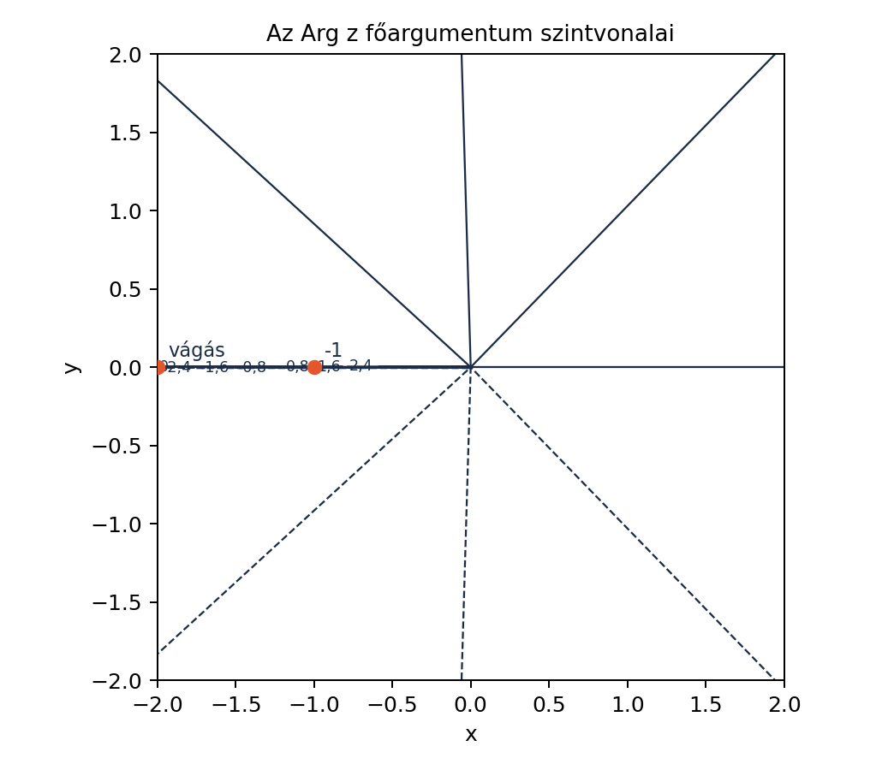

30.3 A komplex exponenciális,
logaritmus és hatvány
A valós exponenciális függvény szigorúan monoton és injektív, ezért
logaritmusa egyértelmű. A komplex exponenciális azonban az Euler-formula
miatt periodikus:
.
Ez a periodicitás azt jelenti, hogy a „melyik
-re
?”
kérdésre végtelen sok válasz van, ha
.
Ez nem a komplex számok hibája, hanem éppen az a tulajdonság, amely
lehetővé teszi, hogy a logaritmus egyszerre írja le egy jel amplitúdóját
és fázisát: a valós rész a nagyság logaritmusa, a képzetes rész a szög.
Ebben az alfejezetben megvizsgáljuk az exponenciális leképezést,
bevezetjük a többértékű logaritmust és annak főágát, majd a komplex
hatványozást.
30.3.1 Szemléletes kép
A következő ábra a
főargumentumot mutatja a komplex síkon. A szintvonalak a fázis értékeit
jelzik
-től
-ig.
A negatív valós tengely mentén az érték ugrik: a tengely fölött
közeli, alatta
közeli értékeket látunk. Ez az ugrás az oka annak, hogy a
főágat a
félegyenes elhagyásával szokás folytonos függvényként vizsgálni.

Az Arg z főargumentum szintvonalai - Az
Arg z főargumentum értéke a komplex síkon. A negatív valós tengely
mentén az érték -π-ről π-re ugrik; ez a Log z főágának elágazási
vágása.
30.3.2 Komplex exponenciális:
periodicitás és csíkok képe
Innen látható, hogy
soha nem nulla, és
,
valamint
modulo
.
Az exponenciális
-periodikus:
.
Tétel (az exponenciális leképezés csíkjai). Az
leképezés a
magasságú vízszintes csíkot, azaz a
halmazt bijektíven képezi a
halmazra.
Bizonyítás. Ha
adott, akkor
pontosan akkor, ha
és
valamely
-re.
A csíkban egyetlen ilyen
van, mégpedig
,
ha
.
Tehát minden nem nulla
-hez
pontosan egy
tartozik a csíkból, és minden ilyen
képe nem nulla. ∎
Az alábbi ábra a tétel geometriáját mutatja: a csík vízszintes
egyenesei az origóból induló félegyenesekbe, függőleges szakaszai origó
középpontú körökbe mennek át. A csík felső pereme
()
a negatív valós félegyenesre kerül, ez lesz a logaritmus főágának
vágása; az alsó perem
()
azért nem tartozik a csíkhoz, mert ugyanerre a félegyenesre
képeződne.
Statikus változat (mint a PDF-ben)
Az
a
csíkot kölcsönösen egyértelműen a
nélküli síkra képezi: vízszintes egyenes
félegyenes, függőleges szakasz
kör;
,
,
Ez a bijekció adja a logaritmus definíciójának alapját: minden
-hoz
van egy kitüntetett
,
amely a csíkban van, és amelyre
.
30.3.3 Komplex logaritmus:
többértékűség és főág
Definíció. A
komplex szám logaritmusán minden olyan
komplex számot értünk, amelyre
.
Jelölés:
.
Ha
trigonometrikus alakban adott, akkor
Itt
a valós természetes logaritmus. A logaritmus tehát végtelen sok értékű,
mert az argumentumhoz
többszöröseit adhatunk.
Definíció (főág). A logaritmus
főága, jelölés
,
az az ág, amelynél az argumentum főértékét használjuk:
ahol
.
A képlet minden
-ra
értelmes (például
),
de a negatív valós tengelyen a függvény nem folytonos. Ezért ha
folytonos (később: holomorf) függvényre van szükség, a főágat a
halmazra szorítjuk, azaz a negatív valós tengelyt (a 0-val együtt)
kihagyjuk; ezt a kihagyott félegyenest elágazási
vágásnak (branch cut) nevezzük.
Megjegyzés. A vágás mentén a
nem folytonos: ha
a negatív valós tengely fölött közelít egy ponthoz, akkor
-hez
tart, ha alulról, akkor
-hez.
Ezért a főág csak a vágás nélküli tartományon folytonos.
30.3.4 A logaritmus főágának
tulajdonságai
Állítás. Minden
-ra
.
Bizonyítás. Írjuk
alakban, ahol
.
Ekkor
,
és
∎
Figyelem. A valós logaritmusból ismert
azonosság a komplex főágra általában nem teljesül.
Például legyen
.
Ekkor
Így
.
Ugyanakkor
,
és
.
Tehát
Az eltérés oka, hogy az argumentumok összege,
,
kiesik a
főágból, ezért a főág ugrik.
Következmény. A
egyenlőség pontosan akkor igaz, ha
.
30.3.5 Komplex hatvány
Definíció. Legyen
és
tetszőleges. A
komplex hatványt a
képlettel definiáljuk, ahol
a többértékű logaritmus. Ennek megfelelően
általában többértékű. A főérték alatt az
értéket értjük.
30.3.5.1 Számolási recept a komplex
logaritmus és hatvány főértékéhez
Írjuk fel
-t
alakban, ahol
.
A logaritmus főága:
.
A komplex hatvány főértéke:
.
Ha az összes érték kell, cseréljük
-t
-re,
.
Példa
().
Számítsuk ki
főértékét. Az
szám abszolút értéke
,
főargumentuma
,
tehát
.
Ezért
Az eredmény meglepő: egy tisztán képzetes szám képzetes kitevőjű
hatványa valós szám. Ez jól mutatja, hogy a komplex hatványozás nem a
valós szabályok egyszerű átvitele.
Példa (n-edik gyökök ágai). A
négyzetgyök főértéke
.
Például
esetén
,
így a főérték
Ha azonban a logaritmus egy másik ágát választjuk, mondjuk
,
akkor
Tehát a négyzetgyök két értéke
és
,
ahogy várjuk. Általában
-nek
különböző értéke van, amelyek egy szabályos
-szög
csúcsaiban helyezkednek el.
Tétel (a komplex hatvány főértékének kiszámítása).
Ha
a főargumentummal
(),
akkor a
főértéke
Levezetés. Ez közvetlenül adódik a definícióból:
,
és
.
∎
30.3.6 Valós életbeli alkalmazás:
erősítés dB-ben és fázis
Az elektronikában és a jelfeldolgozásban egy lineáris rendszer
átviteli függvénye
,
ahol
a körfrekvencia. (Az elektrotechnikában a képzetes egységet gyakran
jelöli, hogy ne tévesszék össze az áram
jelével.) A komplex logaritmus segítségével az átvitelt természetes
módon bonthatjuk amplitúdó- és fázisjellemzőre:
A valós rész a logaritmikus erősítés, amely a decibelben kifejezett
értékkel arányos:
A képzetes rész a fázistolás radiánban, amelyet gyakran fokba váltunk
át.
Konkrét példa. Egy elsőrendű aluláteresztő RC-szűrő
átviteli függvénye
Legyen
,
tehát a törésponti körfrekvencia
.
Vizsgáljuk
-nál.
Ekkor
Ennek abszolút értéke
,
argumentuma
.
Tehát
Az erősítés decibelben:
A fázistolás:
.
Ez a jól ismert
-es
pont, ahol a kimenő jel teljesítménye a felére csökken, és a fáziskésés
.
A komplex logaritmus tehát egyszerre adja meg a jel csillapítását és
késését; ez a Bode-diagramok alapja.
30.3.7 Tipikus hibák
A főág összegzési szabályának hibás alkalmazása.
Sokan feltételezik, hogy
mindig igaz. A fenti példa
()
mutatja, hogy nem. A helyes feltétel az argumentumok összegének főágban
maradása:
.
A periodicitás figyelmen kívül hagyása. Az
egyenlőségből nem következik
,
csak az, hogy
valamely
-re.
Például
,
de
.
A komplex hatványozás valós szabályainak automatikus
átvitele. Például
a főértékekre általában nem igaz, mert a logaritmus főága eltérő ágat
adhat. Ezért mindig a definícióból kiindulva kell számolni.
Az elágazási vágás átlépése. A
főág a negatív valós tengelyen nem folytonos, ezért a vágáson keresztüli
határértékek különböznek. Ezt a vágást folytonosságot vagy
deriválhatóságot igénylő állításoknál ki kell zárni.
30.3.8 Önellenőrzés
Igaz-e, hogy
minden
esetén?
Mennyi
?
Mennyi
főértéke?
Igaz-e, hogy
?
Miért van szükség elágazási vágásra a
főágnál?
Hány értéke van
-nek?
30.3.9 Feladatok
1. feladat (A). Számítsd ki
pontos értékét.
2. feladat (A). Add meg
összes értékét.
3. feladat (B). Számítsd ki
főértékét és az összes értékét.
4. feladat (B). Igaz-e, hogy
minden
-ra?
Ha nem, adj ellenpéldát.
5. feladat (C). Bizonyítsd be, hogy az
függvény
-periodikus,
és ebből vezesd le, hogy a
többértékű: ha
egy logaritmus, akkor az összes logaritmus
alakú.
6. feladat (D). Egy erősítő átviteli függvénye
,
ahol
körfrekvencia rad/s-ban. Számítsd ki
értékét
-nál,
és add meg az erősítést dB-ben és a fázist fokban.
30.3.10 Megoldások
Önellenőrzés – válaszok
Igen, mert
.
.
.
Nem, mert a bal oldal
,
a jobb oldal
.
Mert a főargumentum a negatív valós tengely mentén ugrik
-ről
-re,
így a folytonossághoz ki kell hagyni azt a félegyenest.
Végtelen sok:
,
.
1. megoldás.
abszolút értéke
,
argumentuma
,
így
2. megoldás.
,
,
tehát
3. megoldás. A főérték:
,
így
Az összes érték: az argumentum általános alakja
,
így az
-adik
hatvány
,
három értéket ad:
Ezek
4. megoldás. Nem igaz. Például
:
,
így
.
Ugyanakkor
,
és
.
Tehát
5. megoldás. Az Euler-formulából
.
Ha
logaritmusa
-nek,
azaz
,
akkor minden
-re
,
tehát
is logaritmus. Megfordítva, ha
is logaritmus, akkor
,
amiből
.
Az
egyenlet megoldásai
,
mert
esetén
(így
)
és
.
Tehát
.
∎
6. megoldás.
esetén
Ennek abszolút értéke
,
argumentuma
.
Tehát
Numerikusan:
,
.
Az erősítés dB-ben:
A fázis
.
30.3.11 Rövid összefoglaló
A komplex exponenciális
-periodikus,
és a
magasságú csíkot bijektíven képezi
-ra.
Emiatt a logaritmus többértékű:
,
.
A főág
minden
-ra
értelmes, folytonos (és holomorf) pedig a
tartományon, a vágás a negatív valós tengely. A komplex hatvány
,
főértéke
;
például
.
A
egyenlőség nem mindig teljesül, csak ha az argumentumok összege a
főágban marad.